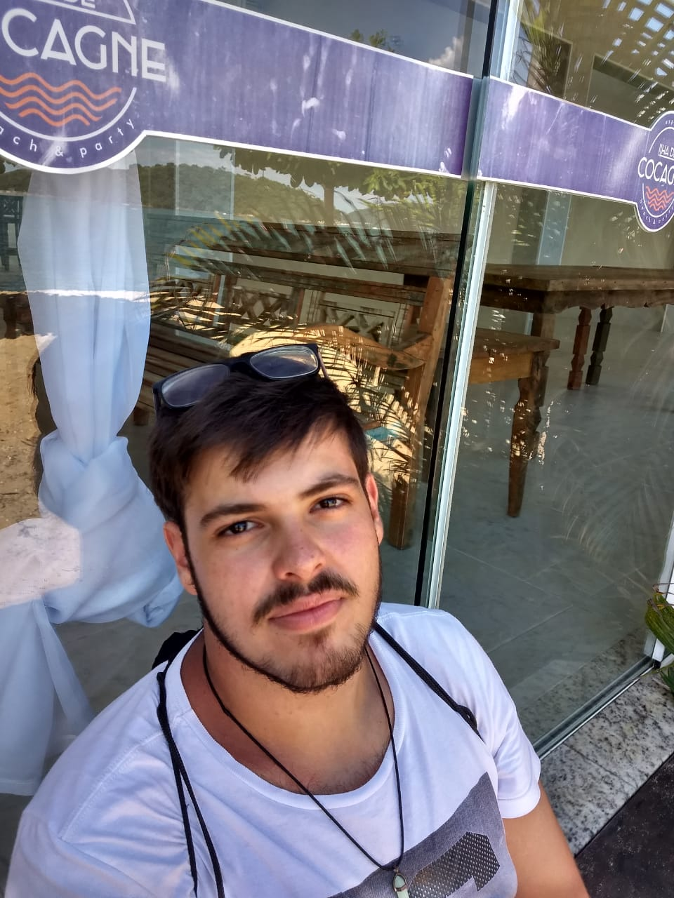

● OBJETIVO
Adquirir experiência
Crescimento profissional
Desenvolvimento em trabalho de equipe
Interação com o ambiente profissional
● FORMAÇÃO ACADÊMICA
Formação superior em Análise e desenvolvimento de sistemas -cursando o primeiro semestre no período noturno – Módulo (Caraguatatuba/SP) - 2020.
Técnico em informática para internet – Instituto Federal (Caraguatatuba/SP) - 2019.
Ensino médio – Tableau (Caraguatatuba/SP) - 2019.
● IDIOMAS
- Inglês Leitura: Médio | Escrita: médio | Fala: Iniciante
- Espanhol Leitura: Médio | Escrita: Médio | Fala: Iniciante
● INFORMAÇÕES COMPLEMENTARES - Projetos Integradores
Instituto Federal - 2018 Atividades desenvolvidas: Criação de um projeto em Html, Css e JavaScript, como trabalho de conclusão de semestre.
Instituto Federal - 2019 Atividades desenvolvidas: Criação de um projeto em Html, Css, JavaScript, PHP, banco de dados e uso de frameworks, como trabalho de conclusão do segundo semestre.
Instituto Federal - 2019 Atividades desenvolvidas: Criação de um projeto em Html, Css, JavaScript, PHP, uso de frameworks, banco de dados e uso do composer, como trabalho de conclusão do terceiro semestre.